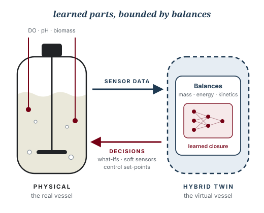

Course series / Course 2
Course 02 Designed
Digital Twins for Process Engineering
Hybrid models that stay honest
Build a hybrid twin, with first-principles balances around learned parts, and keep it honest against real plant data.

Why this course
Self-driving cars, drones and robots learn in simulators long before they meet the real world. Process engineering deserves its own virtual world: a place to try a feed strategy, a mixing change or a sensor failure before it costs a batch.
Industry talks about “digital twins” constantly, yet most engineers have never built one. Most so-called twins are either rigid first-principles models that drift away from the plant, or black-box machine learning that breaks outside the data it has seen. The defensible middle is the hybrid twin: balances and kinetics set the bounds, learned parts fill what physics cannot, and live data keeps the whole thing honest. The instructor builds these for a living, and this course shows you how.
A twin is only useful if it is honest about what it does not know.
Who it is for
Undergraduates
Turn material and energy balances into running code, and see why a model that conserves mass is worth more than one that merely fits.
Graduate students
Learn a repeatable pattern for calibrating, hybridizing and validating models of your own unit operation or research system.
Practicing engineers
Get a working vocabulary and a working prototype: soft sensors, what-if studies and drift alarms for a process you know well.
Leaders and managers
Learn to judge vendor “twin” claims, ask the right questions of your team, and know what a trustworthy twin must show.
What you will be able to do
- Tell a model from a twin. Place any tool on the spectrum and name what data flows in and what decisions flow out.
- Turn balances into tested code. Write mass, energy and species balances with an AI assistant, and prove they conserve.
- Calibrate a model to data. Clean messy sensor series, fit kinetic parameters, and read the residuals.
- Build a hybrid model. Let physics bound a small learned closure for the term you cannot derive.
- Quantify uncertainty and detect drift. Separate fixed, drifting and live parameters, and raise an alarm when the twin stops matching the plant.
- Use and deploy a twin. Run what-if scenarios, design the next experiment, hand off to control, and ship a dashboard.
Model, shadow, twin
The words are used loosely, so the course uses them precisely: they differ by how data and decisions move between the plant and the model.
flowchart LR
A["Spreadsheet model"] --> B["Simulator"]
B --> C["Calibrated model"]
C --> D["Digital shadow"]
D --> E["Digital twin"]
| Kind | Data flow | Typical use |
|---|---|---|
| Spreadsheet model or simulator | None. Inputs typed by hand. | Design, sizing, teaching |
| Calibrated model | Historical data fitted once | Scale-up, troubleshooting |
| Digital shadow | Plant to model, one way, live | Monitoring, soft sensors |
| Digital twin | Plant to model and decisions back to plant | What-if, optimization, control |
Seven weeks, four moves
The course follows one pathway: Play with a working twin, Build your own, Verify that it is honest, then Deploy it.

The hybrid idea
Mass and energy balances are not negotiable, but rate laws, transfer coefficients and cell behavior often are. The hybrid twin keeps the balances and learns only the uncertain terms.
flowchart LR
A["Balances and kinetics"] --> C["Hybrid twin"]
B["Learned closure"] --> C
C <--> D["Plant data"]
C --> E["Soft sensors"]
C --> F["What-if studies"]
C --> G["Control"]
The learned parts live inside the balances, so they cannot create mass or energy from nothing. That bound is what lets a hybrid twin extrapolate more safely than a black box.
The capstone
A hybrid digital twin of a fed-batch bioreactor or CSTR that syncs with sensor data, reports what it does not know, runs what-if scenarios, and ships as a dashboard.
Each capstone includes:
- A tested simulation core that conserves mass, with a calibrated, hybrid model on top.
- A validation report with residuals, uncertainty and a drift alarm.
- A deployed dashboard and short documentation another engineer could trust.
How every week runs
Each week has three one-hour sessions, always in the same order.
Concept
One hour on the idea and the process question behind it, with no code on screen.
Studio
One hour of guided vibe coding: you describe, the AI assistant writes, and you check it against a balance.
Lab
One hour on your own, applying the week to a bioreactor or CSTR dataset and producing the week’s deliverable.
What you need, and what you don’t
You need
A laptop, a web browser, a free AI assistant account, and a process you care about.
You don’t need
Prior coding, a command line, Git, any installations, or a plant of your own. Datasets are provided.
Tools you will meet
Claude ChatGPT Gemini Copilot Cursor Google Colab Python SciPy pandas PyTorch Streamlit MQTT GitHub
After this course
- Build a first twin of your own unit operation.
- Judge vendor “twin” claims with a clear checklist.
- Hand a trustworthy simulator to an RL or model predictive controller.
- Give AI agents a safe, honest model to reason with.
Continue with Course 3: Agentic AI for Process Operations or Course 1: Reinforcement Learning for Chemical Engineers.
Course designer and instructor
Co-developed with Dr. Nigel F. Reuel, Iowa State University
Your instructor
Sakib Ferdous, Ph.D.
Sakib is a chemical engineer and AI researcher who builds digital twins and learning controllers for bioprocesses, and carries them from equations to deployed tools. He holds a Ph.D. in Chemical Engineering from Iowa State University and is the first graduate of Iowa State’s M.Sc. in Artificial Intelligence. His doctoral work built Game of Cells, a cell-culture digital twin for training control policies, and reinforcement-learning strategies for CAR T-cell expansion and fed-batch enzyme production, published in Biotechnology and Bioengineering and the AIChE Journal.
He then took the same ideas into production. At Corteva Agriscience he deployed a company-wide decision pipeline on Docker and Kubernetes. At Craft BioSolutions, a startup founded on this research, he co-owns the physics-based bioreactor twin and its device-to-cloud stack. He learned AI for chemical engineering the hard way, back when the code was the wall. These courses are built so the next engineer does not have to.
- EducationPh.D. Chemical Engineering and M.Sc. Artificial Intelligence, Iowa State · B.Sc. Chemical Engineering, BUET
- IndustryPostdoctoral Research Associate, AI in Plant Breeding, Corteva Agriscience (2025–)
- StartupHead of Bioprocess Automation, Craft BioSolutions (2025–)
- NextMIT Initiative for New Manufacturing, AI agents that learn bioprocesses (from January 2027, planned)
- TeachingAIChE 2026 Education Division talk 217c · APEX and WiSE AI-in-ChemE workshops · mentee to first-author paper (2026)
- LeadershipNSF I-Corps Entrepreneurial Lead · CEGSO President · GPSS Senator, Iowa State
Full materials on request
The complete course package is ready to share
Session slide decks, browser notebooks, the instructor guide and the capstone briefs are shared with collaborating faculty, departments and industry partners. Write to ask for a walkthrough, a pilot offering, or the materials for one course.
Sakib Ferdous · ferdous1418@gmail.com · +1 515 686 7280
- Slide decks for all 21 sessions
- Browser notebooks (Google Colab)
- Instructor guide and timing notes
- Prompt libraries for each lab
- Rubrics and capstone briefs
- Simulators and datasets